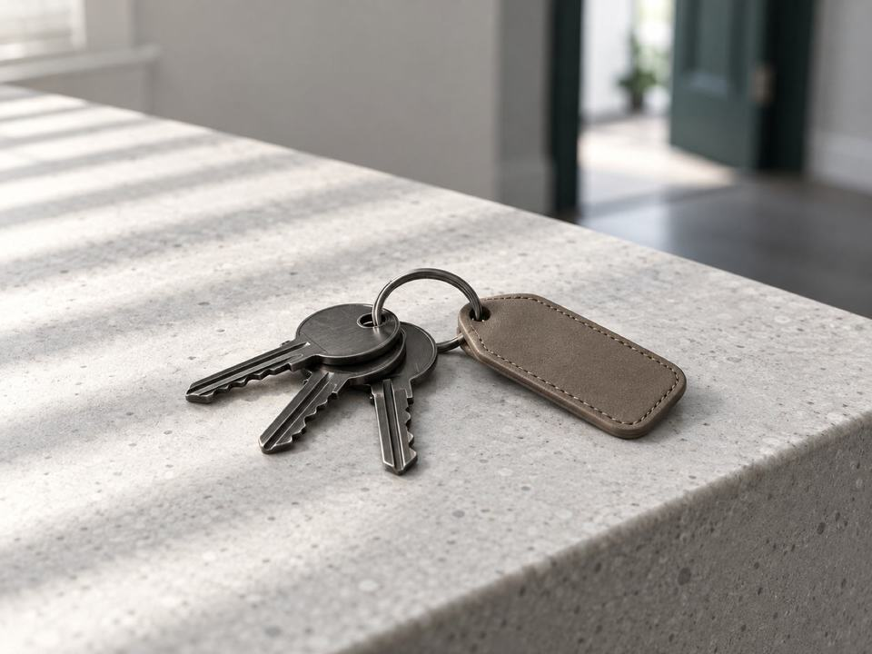

Família e sucessões
Quando a família muda
Para o casal que vai casar ou que decidiu se separar, e para quem precisa organizar uma herança.
Perguntar sobre issoDanielli Klöppel · OAB/SC 47960
Sou advogada em Barreiros, São José, e atuo em família e sucessões, na área trabalhista, no cível e no imobiliário. Estou ao lado de quem busca segurança e clareza em momentos importantes.
Sua situação
Você não precisa saber o nome jurídico do problema. Toque na frase que descreve o que você vive hoje e leia o que vale saber primeiro.
Se o seu caso não está nesta lista, escreva do seu jeito.
Descrever a situaçãoÁreas
Assessoria jurídica para pessoas e para empresas, em quatro áreas.
Família e sucessões
Para o casal que vai casar ou que decidiu se separar, e para quem precisa organizar uma herança.
Perguntar sobre issoTrabalhista
Revisão de contratos de trabalho e de políticas internas. Se chegar um processo, faço a representação da empresa.
Perguntar sobre issoCível
O direito cível trata dos compromissos entre pessoas e empresas, como a prestação de um serviço ou um empréstimo.
Perguntar sobre isso
Imobiliário
O direito imobiliário reúne as relações em torno de um imóvel, como a compra e venda e a locação.
Perguntar sobre issoSobre
Me chamo Danielli Klöppel. Sou advogada e, em 2025, abri a Klöppel Advocacia, em São José. Meu trabalho é unir conhecimento técnico e sensibilidade humana.
Quem me procura recebe uma estratégia pensada para a sua necessidade específica.
Danielli Klöppel · OAB/SC 47960
Danielli Klöppel Sociedade Individual de Advocacia · OAB/SC 10993
Como funciona
Da primeira mensagem ao acompanhamento.
Pelo WhatsApp, você conta o que está acontecendo, com as palavras que tiver.
Enviar mensagemÉ recomendado marcar hora. A conversa acontece na sala 410, no Empresarial Terra Firme.
Com os documentos que você tiver, estudo a sua situação e os caminhos possíveis.
As opções, como um acordo ou um processo, são explicadas antes, e a escolha é sua.
No encaminhamento da sua demanda, faço o retorno sobre as questões necessárias.
Como eu atendo
Analiso a realidade do seu caso e explico o que está sendo feito e por quê.
Respondo às suas dúvidas com clareza, uma a uma.
Nas negociações, a conversa é guiada pela valorização dos seus interesses.
Onde fica
Dúvidas
Respostas gerais, que não substituem a análise do seu caso.
Um documento com foto e os papéis ligados ao assunto, como certidões, contratos ou notificações. Se não tiver nada em mãos, escreva mesmo assim.
Então o pedido vai para a Justiça, e o juiz decide os pontos em que não houve entendimento. Mesmo durante o processo, as partes ainda podem se entender.
Precisa. Quando o casal está de acordo e cumpre os requisitos da lei, o divórcio pode ser feito por escritura em cartório, sempre com a assistência de advogado.
Pode, se mudou a situação de quem paga ou de quem recebe. A revisão é pedida ao juiz, inclusive quando as partes chegam a um novo acordo.
Fica. O advogado tem o dever de guardar sigilo sobre o que o cliente conta, desde o primeiro contato.
Seja para esclarecer dúvidas ou buscar orientações jurídicas, estou aqui para ajudar. Conte comigo.
Enviar mensagem